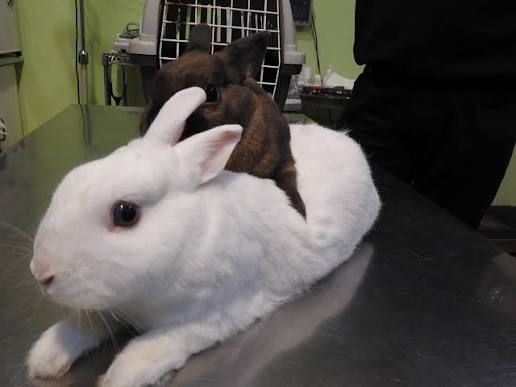

La mejor atención para tu mascota
Somos la Veterinaria San Marcos, cuidando a los regalones de Rancagua desde el 2009. Atendemos principalmente perros y gatos, además de conejos y aves.
Pedir hora online
Por qué elegirnos
Sabemos que necesitas lo mejor para tu animalito. Olvídate de tener que llamar por teléfono a la recepcionista, ahora puedes agendar tus servicios de consulta general, vacunación y control de peso 100% por internet.


Conoce nuestras instalaciones
Mira este video para ver cómo vamos a hacer sentir a tu mascota como en casa.